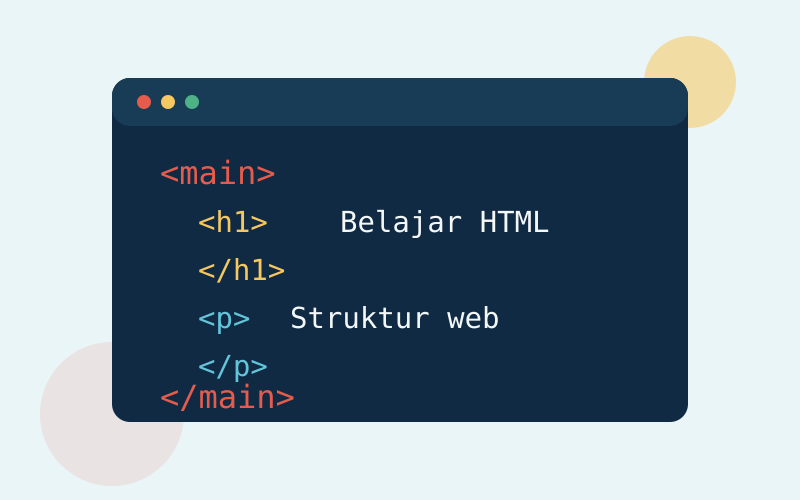

Ruang belajar untuk pemula
Belajar HTML, lalu bangun sesuatu yang nyata.
Mulai dari struktur halaman, pahami cara kerja elemen, dan kembangkan kebiasaan coding yang membuatmu siap melangkah menjadi programmer web.
Mulai membacaBaca dan praktikkan
Fondasi yang membuat proses belajar terasa masuk akal.
Pelajaran ringkas berikut dirancang untuk dibaca berurutan, kemudian langsung dicoba di editor kode.

Mengenal Struktur Dasar HTML
Pelajari peran HTML dalam membangun struktur halaman web yang semantik dan mudah dipahami.
HTML (HyperText Markup Language) adalah bahasa yang digunakan untuk membuat struktur halaman web. Dengan HTML, kita dapat menulis judul, paragraf, tautan, gambar, dan elemen lain yang membentuk tampilan sebuah website.
Elemen dasar dalam HTML biasanya terdiri dari tag pembuka dan tag penutup. Contohnya, tag <h1> untuk judul utama, <p> untuk paragraf, dan <a> untuk membuat link. Setiap elemen memiliki fungsi yang berbeda, tetapi semuanya bekerja sama untuk membangun halaman yang rapi dan mudah dibaca.
Selain itu, HTML juga memungkinkan kita menambahkan atribut seperti href, src, dan alt. Atribut href digunakan pada link untuk menentukan alamat tujuan, src digunakan pada gambar untuk menunjukkan lokasi file, dan alt digunakan untuk memberikan deskripsi alternatif pada gambar.
Dengan memahami dasar-dasar HTML, seseorang dapat mulai membuat halaman web sederhana dan menyiapkan langkah awal untuk belajar teknologi web yang lebih lanjut, seperti CSS dan JavaScript.
Saat membuat dokumen HTML, gunakan struktur yang teratur: deklarasi doctype, elemen
<html>, bagian <head> untuk metadata, dan
<body> untuk konten yang dilihat pengunjung. Struktur ini membantu
browser menampilkan halaman dengan benar dan membantu mesin pencari memahami isi halaman.
HTML semantik juga penting untuk aksesibilitas. Gunakan <header>,
<main>, <article>, dan <footer>
sesuai fungsi konten, bukan hanya untuk mengatur posisi. Setelah struktur selesai, CSS dapat
digunakan untuk mengatur warna dan tata letak, sedangkan JavaScript menambahkan interaksi.
Langkah Awal Menjadi Programmer
Kenali kebiasaan belajar, latihan logika, dan proyek kecil yang membantu membangun fondasi pemrograman.
Menjadi seorang programmer bukan hanya tentang menulis kode, tetapi juga tentang membangun logika, kemampuan problem solving, dan ketekunan dalam belajar. Seorang programmer harus siap menghadapi tantangan, mulai dari memahami perintah sederhana hingga menyelesaikan masalah yang kompleks.
Persiapan yang perlu dilakukan meliputi belajar dasar bahasa pemrograman, memahami algoritma, dan sering berlatih membuat program kecil. Praktik secara rutin akan membantu kita lebih cepat memahami konsep dan meningkatkan kemampuan berpikir kritis.
Selain itu, penting juga untuk membiasakan diri membaca dokumentasi, mengikuti tutorial, dan mencoba proyek kecil agar kemampuan berkembang lebih nyata. Manfaatkan waktu untuk terus belajar, karena dunia teknologi selalu berubah dan berkembang.
Dengan disiplin, konsisten, dan semangat yang tinggi, siapapun dapat memulai perjalanan menjadi programmer yang handal. Kunci utamanya adalah terus mencoba, tidak takut gagal, dan selalu mau belajar dari setiap kesalahan.
Langkah pertama adalah memilih satu jalur belajar yang jelas. Untuk pemula di bidang web, mulailah dari HTML, lanjutkan ke CSS, kemudian pelajari JavaScript. Pahami fungsi setiap teknologi sebelum berpindah, karena fondasi yang kuat membuat materi berikutnya lebih mudah.
Buat jadwal latihan yang realistis, misalnya tiga puluh menit setiap hari. Ketik ulang contoh kode, ubah nilainya, lalu amati hasilnya. Kebiasaan mencoba dan memperbaiki kesalahan akan melatih cara berpikir logis lebih baik daripada hanya membaca tutorial.
Setelah memahami dasar, kerjakan proyek kecil seperti halaman profil, daftar tugas, atau blog sederhana. Simpan proyek menggunakan Git, tulis catatan tentang hal yang dipelajari, dan baca dokumentasi resmi. Portofolio kecil yang selesai menunjukkan perkembangan secara nyata.
Tidak perlu menghafal semua sintaks. Programmer yang baik terbiasa memecah masalah menjadi bagian kecil, mencari informasi dengan kata kunci yang tepat, menguji solusi, dan meminta masukan. Konsistensi dan rasa ingin tahu adalah modal penting untuk terus berkembang.
Peta perjalanan
Tiga kebiasaan untuk berkembang lebih cepat.
Kemampuan teknis tumbuh dari langkah kecil yang diulang. Jangan menunggu sampai merasa siap; gunakan setiap latihan untuk menemukan bagian yang belum dipahami dan memperbaikinya sedikit demi sedikit.
- 01
Pahami struktur
Pelajari fungsi tag, atribut, dan HTML semantik sebelum mempercantik tampilan.
- 02
Bangun proyek kecil
Ubah teori menjadi halaman profil, daftar tugas, atau artikel sederhana yang selesai.
- 03
Evaluasi dan ulangi
Baca dokumentasi, periksa kesalahan, lalu refaktor kode agar semakin rapi.